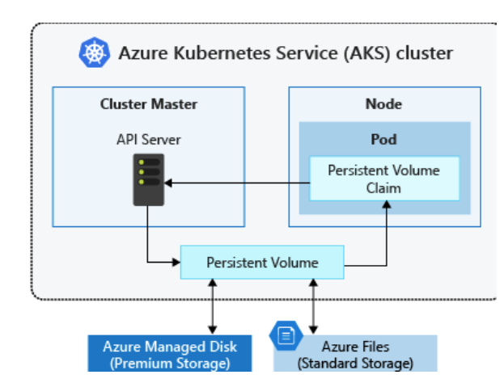
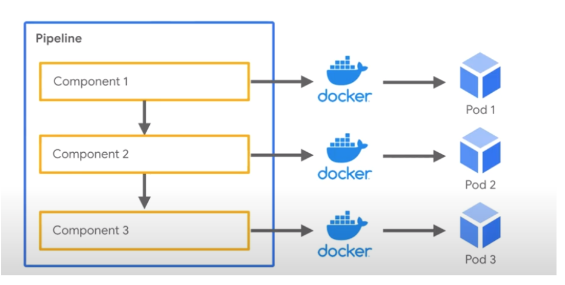

Kubernetes
Overview
Open-source platform for managing your containers
Microservices architecture - more agile versus hadoop
Containerized applications allows for consistent environments
Moving between Development and Production environments
Scaling large scale workloads and can leverage frameworks like Spark
Spark creates a spark driver running within a kubernetes on a pod
Workers are deployed in the Kubernetes cluster
Pods
Group of one or more containers
shared storage/network resources
Instructions for how to run the containers
Pods scheduled on nodes (e.g. virtual machine)
Nodes run node agents called Kublet
All communication happens through the API server
Volumes
Volume represents a way to store, retrieve, and persist data across pods and through the application lifecycle
Applications often need to be able to store and retrieve data.
Ephemeral:
disposable resources, different approaches are available for applications to use and persist data as necessary. Kubernetes volumes can also be used as a way to inject data into a pod for use by the containers.
Secrets/configs/metadata
Persistent Volume:
Volumes that are defined and created as part of the pod lifecycle only exist until the pod is deleted.

MiniKube
Runs single node kubernetes cluster on your local laptop
Use base docker image for Spark - pull image from DockerHub
Make spark distribution tarball
Build the image for Spark
Instead can use Helm - a package manager to kubernetes for configuration
Helm charts for Spark setup (not familiar with)
Assists with building config.yaml file for JupyterHub
Commands:
Create pod:
Kubectl create -f jupyperlab.yamlCreate service (DNS entry):
Kubectl create -f jupyperlab-service.yamlPod status:
Kubectl get pods,Kubectl get servicesForward ports to access Jupyter Notebooks
Access Kubernetes UI
Can see status of pods
Kubeflow
Curated set of tools for running ML workflows
Makes ML use-cases portable and scalable
Easily deploy workflows to Kubernetes
Train models, Tensorboard, serve model, build pipelines
Login to Jupyter Hub
